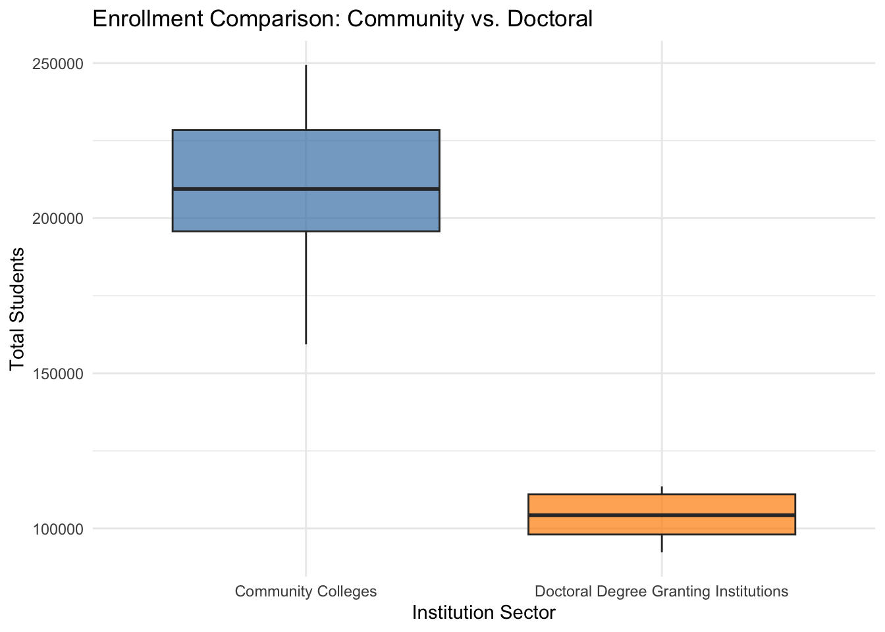

library(tidyverse)
# Load the data
ny_data <- read_csv("../data/race_ny.csv")
# Clean data:
# 1. Remove commas from enrollment numbers
# 2. Filter for only TWO groups in the 'Institution Sector'
comparison_data <- ny_data |>
mutate(total_enroll = as.numeric(gsub(",", "", `Total Enrollment`))) |>
filter(`Institution Sector` %in% c("Community Colleges", "Doctoral Degree Granting Institutions")) |>
rename(sector = `Institution Sector`)Solution - Lab 12: Statistical inference for two means
MAT 186: Introduction to Data Science
Statistical inference for two means - Official Solutions
NoteInstructor Note
Add your specific DCC lab answers below this box.
To solve Lab 12, we perform a Two-Sample T-Test. This test is used to compare the means of a numeric variable across two distinct groups. Using your SUNY dataset, we will compare the average enrollment of Community Colleges versus Doctoral Degree Granting Institutions.
Here is the complete solution for solutions/lab12-ans-q8w1.qmd, including all accessibility requirements.
Markdown
title: “Solution - Lab 12: Comparing Two Means” subtitle: “MAT 186: Introduction to Data Science” format: html: toc: true toc-location: right —
Lab 12 Official Solutions: Two-Sample Inference
In this lab, we test whether there is a statistically significant difference between the enrollment means of two different SUNY sectors.
Task 1: Loading and Filtering Data
We prepare our data by cleaning the numeric enrollment column and filtering our categorical variable to include only two specific groups: Community Colleges and Doctoral Degree Granting Institutions.
Task 2: Visualizing the Comparison
A boxplot allows us to see the center and spread of enrollment for both groups side-by-side.
ggplot(comparison_data, aes(x = sector, y = total_enroll, fill = sector)) +
geom_boxplot(alpha = 0.7) +
scale_fill_manual(values = c("steelblue", "darkorange")) +
labs(title = "Enrollment Comparison: Community vs. Doctoral",
x = "Institution Sector",
y = "Total Students") +
theme_minimal() +
guides(fill = "none") # Hide legend as X-axis labels are sufficient

Task 3: State Your Hypotheses
We are testing if there is a real difference in the average size of these two types of institutions.
- Null Hypothesis (\(H_0\)): There is no difference in mean enrollment between the two sectors (\(\mu_1 = \mu_2\)).
- Alternative Hypothesis (\(H_a\)): There is a significant difference in mean enrollment between the two sectors (\(\mu_1 \neq \mu_2\)).
Task 4: Running the Two-Sample T-Test
We use the formula syntax numeric_variable ~ categorical_variable to run the test.
# Run the two-sample t-test
t_results <- t.test(total_enroll ~ sector, data = comparison_data)
# Display results
t_results
Welch Two Sample t-test
data: total_enroll by sector
t = 17.047, df = 24.837, p-value = 3.228e-15
alternative hypothesis: true difference in means between group Community Colleges and group Doctoral Degree Granting Institutions is not equal to 0
95 percent confidence interval:
91558.41 116731.86
sample estimates:
mean in group Community Colleges
207878.5
mean in group Doctoral Degree Granting Institutions
103733.4 Task 5: The Conclusion
Based on the statistical analysis:
Formal Conclusion: Since the p-value was r format.pval(t_results$p.value, digits = 4), which is much smaller than the alpha level of 0.05, we reject the null hypothesis. The data provides strong evidence that the average enrollment at Community Colleges is significantly different (higher) than the average enrollment at Doctoral Degree Granting Institutions.